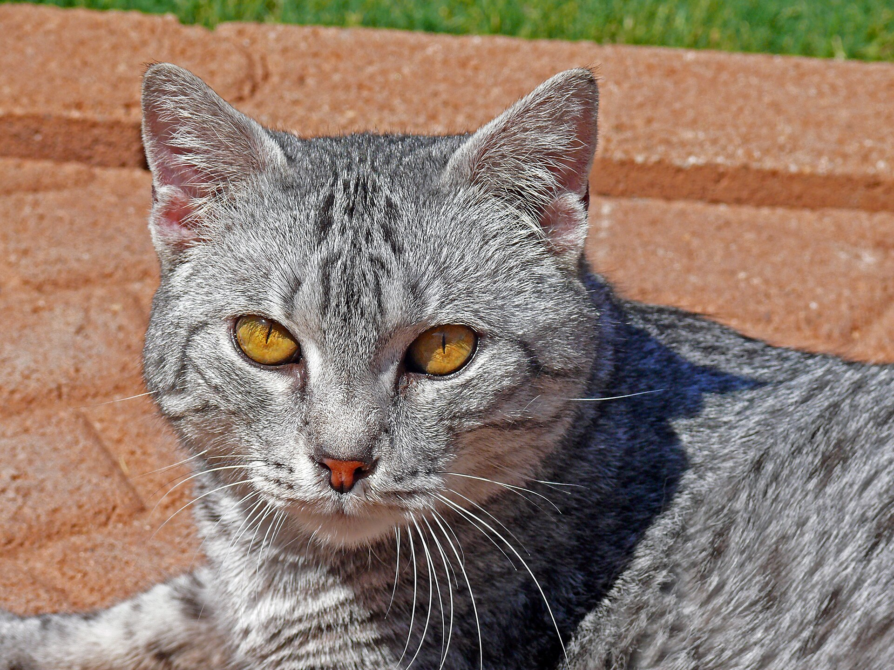
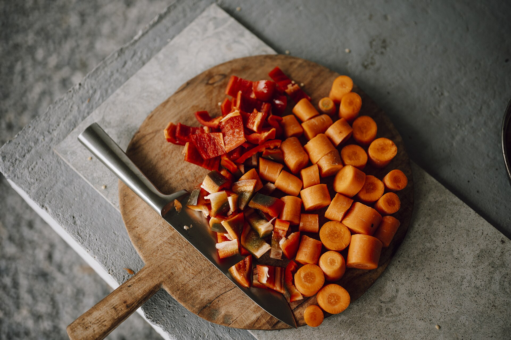
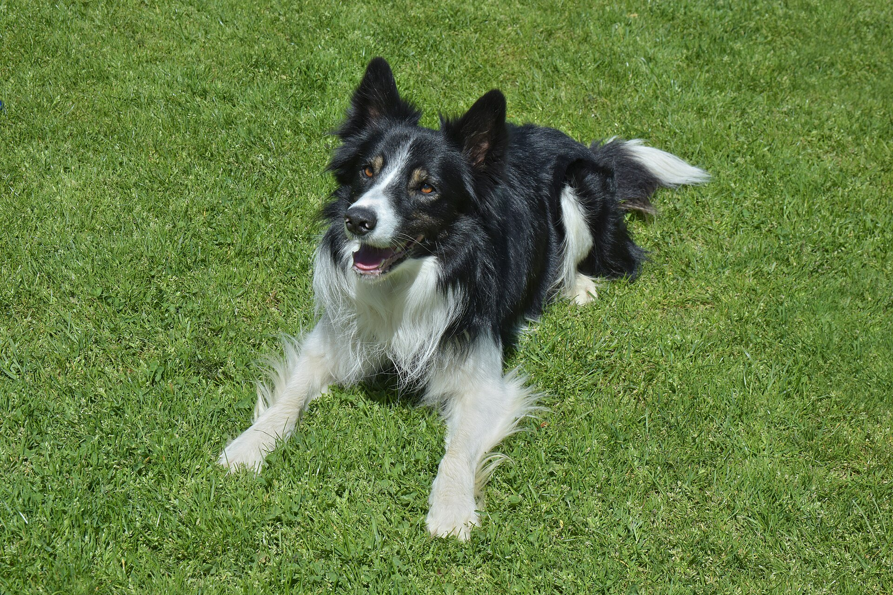

Skin and ears
Elimination trials and diet changes for itching, paw licking and ear infections that return.

A residency-trained veterinary nutritionist sets your pet's calorie target, writes the recipe in grams and gives you a recheck schedule, all by video.
Why diet first
Itching, repeat ear infections and loose stools can share a cause in what a pet eats. A Rootwell consult starts with the bowl, works from your vet's records and ends with a plan you can measure.
Every plan comes with the checks that show whether it is working.


Elimination trials and diet changes for itching, paw licking and ear infections that return.

Chronic diarrhea, vomiting, IBD and food sensitivities, with fiber matched to the case.

Calorie targets that keep muscle, and diets that fit kidney, liver or joint care.

The first two include the video consult, the written plan and one follow-up within 30 days.
Paid once your case is reviewed and the estimate is sent, before scheduling. Non-refundable once paid. After a year, a new consult is billed at the full fee.
Residency-trained clinical nutrition for your patient, who stays in your care.

Residency-trained veterinary nutritionist, NC State, 2021 to 2024.
Dr. Chae was a primary care veterinarian at Banfield Pet Hospital from 2018 to 2020, where he saw how often a case turned on what the pet ate. He consults in English and Korean, and lives in Los Angeles with his wife and their cats Bong, Byul and Bee.

A short request for one pet, about 2 to 3 minutes. No payment is taken and no appointment is booked at this step.
Yes. Your veterinarian stays responsible for diagnosis and treatment; the plan supports that care.
After Dr. Chae reviews your request and records and sends the estimate. Payment comes before the appointment is scheduled.